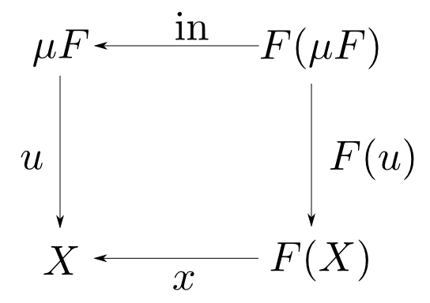

圏論勉強会
第10回
@ワークスアプリケーションズ
中村晃一2013年7月18日
謝辞
この勉強会の企画，会場設備の提供をして頂きました
㈱ ワークスアプリケーションズ様
にこの場をお借りして御礼申し上げます。
この会について
- 圏論(category theory)を題材にいろんなことを学びます。
- 分かり易さを重視して初歩的な例を多用します。
- 関数型言語の経験がある方がより楽しめると思います。資料中では主にHaskellを使います。
- 中高生も数人見ているらしいのでプログラミングと関係が浅い内容も取り上げます。
- この資料はhttp://nineties.github.com/category-seminarに置いてあります。
第10回
始代数・終余代数と不動点,型函手
第10回の内容
第7・8回に紹介した始代数・終余代数と前回紹介した不動点意味論の関連について説明します。データ型と関係の深い函手である,型函手というものの紹介をします。
始代数・終余代数と不動点
復習: Lambekの補題
$(T,\mathrm{in})$が$F$始代数ならば$\mathrm{in}$は同型射、すなわち $$ \color{red}{T \cong F(T)} $$ である。
これは対象$T$が自己函手$F$の不動点であるという事を表します。 双対性により,終余代数についても同じ事が言えます。
始代数・終余代数は不動点
圏$\mathbf{C}$,自己函手$F:\mathbf{C}\rightarrow\mathbf{C}$について、
- $F$始代数が存在するならば、それは$F$の不動点である。
- $F$終余代数が存在するならば、それは$F$の不動点である。
以後,$F$始代数と終余代数を区別する為に,始代数を$\mu F$,終余代数を$\nu F$と表します。
簡単な応用
函手$F$に不動点が存在しなければ始代数も終余代数も存在しないという事が言えます。
有名な例は冪集合函手$\mathcal{P}: \mathbf{Sets}\rightarrow \mathbf{Sets}$です。これは
- 集合$X$を冪集合$\mathcal{P}(X)$に移す。
- 関数$f: X\rightarrow Y$を$\mathcal{P}(f): \mathcal{P}(X) \ni A \longmapsto f(A) \in \mathcal{P}(Y)$に移す。
という函手ですが、カントールの定理(第5回)より任意の集合$A$に対して $$ A \not\cong \mathcal{P}(A) $$ なので,$\mu\mathcal{P}$も$\nu\mathcal{P}$も存在しません。
復習: 連続関数$F$の最小不動点
cpo D上の連続関数$F:D\rightarrow D$の最小不動点は $$ \bot \leqq F(\bot) \leqq F^2(\bot) \leqq F^3(\bot) \leqq $$ という$\omega$-chainの余極限 $$ \lim_{\stackrel{\longrightarrow}{i \in\omega}}F^i(\bot) $$ として具体的に構成出来るのでした。
始代数は最小不動点
「cpo上の連続関数の最小不動点の構成方法」を一般化する事で(圏と$F$が良い性質を持つ場合には)$F$始代数の具体的な構成を与える事が出来ます。
この意味で$F$始代数$\mu F$は$F$の最小不動点(least fixedpoint)と呼ばれます。
initial $\omega$-chain
$\mathbf{C}$が始対象$0$をもつ場合,任意の自己函手$F:\mathbf{C}\rightarrow\mathbf{C}$に対して $$ !: 0 \rightarrow F(0) $$ という射が唯一に定まります。さらに$F$によって移すと $$ F(!): F(0)\rightarrow F^2(0) $$ という射になります。
これを繰り返して出来る列を$F$のinitial $\omega$-chainと呼びます。
initial $\omega$-chainの例1
cpoの始対象は最小値$\bot$であり,射は順序$\leqq$ですから,任意の自己函手$F$について $$ \bot \leqq F(\bot) \leqq F^2(\bot) \leqq F^3(\bot) \leqq $$ がinitial $\omega$-chainです。
initial $\omega$-chainの例2
圏を$\mathbf{Sets}$,函手を$F(X) = X + 1$とした場合を考えます。
$\mathbf{Sets}$において始対象$0$は空集合,終対象$1$は一点集合,余積$A+B$は$A$,$B$の直和でしたので,$F^i(0)$は要素数が$i$の集合となります。($0 + 1 \cong 1$, $(A+B)+C\cong A+B+C$に注意。)
initial $\omega$-chainの例2
また,$!$は空関数でした。さらに$f: X\rightarrow Y$に対して$F(f): X + 1 \rightarrow Y + 1$は $$ F(f) = f + 1_1 $$ と定義されるので,$F^i(!)$の様子は下図の様になります。
定理
圏$\mathbf{C}$が始対象を持つ$\omega$余完備な圏であるとする。自己函手$F: \mathbf{C}\rightarrow\mathbf{C}$が$\omega$余連続ならば,$F$始代数が存在し $$ \mu F = \lim_{\stackrel{\longrightarrow}{i \in \omega}} F^i(0) $$ である。
注:「$\omega$余完備」の条件は「$F$のinitial $\omega$-chainの余極限が存在」、 「$\omega$余連続」の条件は「$F$のinitial $\omega$-chainの余極限を保つ」と弱めても良いです。
$\displaystyle \mu F = \lim_{\stackrel{\longrightarrow}{i \in \omega}}F^i(0) $ とおいて,これが始代数である事を示します。
【証明】
$F$が$\omega$余連続であることより,
$$ F(\mu F) = F(\lim_{\rightarrow}F^i(0)) \cong \lim_{\rightarrow}F^{i+1}(0) = \mu F\quad \cdots (1)$$
である。
ここで,$F$のinitial $\omega$-chainの余極限の錐を$(\mu F, q_i)$とおく。すると,$(F(\mu F), F(q_{i-1}))$(但し$0$から$F(\mu F)$の射は$!$)もinitial $\omega$-chainを底とする錐となるが,$(1)$よりこれも余極限の錐である。
従って$(F(\mu F), F(q_{i-1}))$から$(\mu F, q_i)$への射が唯一つ存在するので,これを$\mathrm{in}$と呼ぶ事にする。すなわち,$\mathrm{in}$は任意の$i \in \omega$に対して
$$ q_{i+1} = \mathrm{in}\circ F(q_i) \quad\cdots (2)$$
を満たす。この$(\mu F, \mathrm{in})$の組が$F$始代数となる事を示せば良い。
ここで,$F$代数$x: F(X)\rightarrow X$を任意に取ると $$ (X, x\circ F(x)\circ \cdots\circ F^{i-1}(x)\circ F^i(!_X)) $$ がinitial $\omega$-chainを底とする錐をなす。これを$(X, x_i)$と置くと $x_0 = !_X$であり, $$ \begin{aligned} x_{i+1} &= x\circ F(x)\circ \cdots\circ F^i(x)\circ F^{i+1}(!_X) \\ &= x\circ F(x\circ \cdots F^{i-1}(x)\circ F^i(!_X)) \\ &= x\circ F(x_i) \quad \cdots (3) \end{aligned} $$ が成り立つ。
従って$(X,x_i)$が錐であることより,錐$(\mu F,q_i)$への射$u$,すなわち $$ u\circ q_i = x_i \quad\cdots (4) $$ が任意の$i \in \omega$について成立するような$u: \mu F\rightarrow X$が唯一つ存在する。
 すると右図の様な四角形が出来るが,これが可換である事つまり $$ u\circ\mathrm{in} = x\circ F(u)$$ とこれを満たす$u$が他には存在しない事を示せば$(\mu F, \mathrm{in})$が始代数となる事の証明が完了する。
まず$(3),(4)$より $$ x\circ F(u) \circ F(q_{i-1}) = x\circ F(u\circ q_{i-1}) = x\circ F(x_{i-1}) = x_i$$ が成り立つ。また$(2),(4)$より $$ u\circ\mathrm{in}\circ F(q_{i-1}) = u\circ q_i = x_i $$ も成り立つ。すると下図の様に,$u\circ\mathrm{in}$と$x\circ F(u)$は錐$(F(\mu F),F(q_{i-1}))$から錐$(X,x_i)$への射となるが$(F(\mu F),F(q_{i-1}))$も極限錐であることより,そのような射は唯一に定まる。すなわち $$ u\circ\mathrm{in} = x\circ F(u)$$ が成り立つ。
一方 $$ v\circ\mathrm{in} = x\circ F(v)$$ を満たす$v: \mu F \rightarrow X$が存在すると仮定すると,両辺に$F(q_i)$を掛けて$(2)$を用いる事により $$ v\circ q_{i+1} = x\circ F(v)\circ F(q_i) = x\circ F(v\circ q_i) $$ となる。するともし$v\circ q_i = x_i$であるならば$(3)$により $$ v\circ q_{i+1} = x\circ F(x_i) = x_{i+1} $$ となる。ここで,$q_0$,$x_0$が共に始対象からの射であることより$ v\circ q_0 = x_0 $ であるから,帰納的に任意の$i\in\omega $に対して $$ v\circ q_i = x_i$$ が成り立つ。ところで$(4)$が任意の$i\in\omega$について成り立つ$u$は唯一に定まるのであったから, $ u = v $ である。以上より任意の$x:F(X)\rightarrow X$に対して $$ u\circ\mathrm{in} = x\circ F(u)$$ を満たす$u$が一意に定まる事が示されたので$(\mu F, \mathrm{in})$は始代数である。□
終余代数は最大不動点
圏$\mathbf{C}$が終対象を持つ$\omega^{\mathrm{op}}$完備な圏であるとする。自己函手$F:\mathbf{C}\rightarrow\mathbf{C}$が$\omega^{\mathrm{op}}$連続ならば,$F$終余代数が存在し $$ \nu F = \lim_{\stackrel{\longleftarrow}{i \in \omega}} F^i(1) $$
始代数の双対が終余代数ですので、自動的にこの定理を得ます。 つまり,以下の$\omega^{\mathrm{op}}$-chainの極限が終余代数となります。
何が嬉しいのか？
前回の不動点意味論の所でも説明しましたが,ある概念の「具体的な構成方法を得る」事が出来ると
- その概念の理解が深まる(特に直観的な理解を得られる)。
- その構成方法に基づく証明が可能になる。
などの有り難みがあります。
Haskellでの実装例
{-# LANGUAGE DeriveFunctor, TypeSynonymInstances, FlexibleInstances #-}
import Prelude hiding (succ,sum)
-- Haskellでは、以下のFixを使うと「函手fの最小不動点」を得る事が出来ます。
-- また、Haskellでは最小不動点と最大不動点は(細い事を気にしなければ)一致します。
-- 結局始代数・終余代数は全て以下のFixで作る事が出来ます。
--
-- 以下の定義は Fix f = f (Fix f) という不動点の等式に対応します。
newtype Fix f = In { out :: f (Fix f) }
-- F始代数の定義より
-- u . in = phi . F(u)
-- を満たすuはphiに対して一意に定まります。これにinの逆射を右から掛けると
-- u = phi . F(u) . in^(-1)
-- となるので,u = cata phiとしてそのままコードにすると以下のような汎用的な
-- 関数を得ます。
cata :: Functor f => (f a -> a) -> Fix f -> a
cata phi = phi . fmap (cata phi) . out
-- 同様に
-- out . u = F(u) . psi
-- を満たすuがpsiに対応するanamorphismなので、
-- 以下のコードを得ます。
ana :: Functor f => (a -> f a) -> a -> Fix f
ana psi = In . fmap (ana psi) . psi
-- ## 自然数 ##
-- NatF(X) = 1 + X
data NatF x = Zero | Succ x
deriving (Show,Functor)
-- その不動点が自然数型。
type Nat = Fix NatF
-- 補助関数
zero :: Nat
zero = In Zero
succ :: Nat -> Nat
succ n = In (Succ n)
instance Show Nat where
show x = show (cata phi x) -- 組み込み整数に変換して表示
where
phi Zero = 0
phi (Succ x) = x + 1
-- foldの例。
-- > sqrt2 (succ (succ (succ zero)))
-- 1.4142156862745097
sqrt2 = cata phi
where
phi Zero = 2
phi (Succ x) = (x+2/x)/2
-- unfoldの例。
-- > ilog2 12348712
-- 3
ilog2 = ana psi
where
psi x = if x `mod` 2 == 1 then Zero else Succ (x `div` 2)
-- ## リスト ##
-- ListF(X) = 1 + A*X という函手。
data ListF a x = Nil | Cons a x
deriving (Show,Functor)
-- その不動点がリスト型。
type List a = Fix (ListF a)
-- 補助関数
nil :: List a
nil = In Nil
cons :: a -> List a -> List a
cons a as = In (Cons a as)
instance Show a => Show (List a) where
show x = show (cata phi x) -- 組み込みリストに変換して表示
where
phi Nil = []
phi (Cons a x) = a:x
-- foldの例。
sum = cata phi
where
phi Nil = 0
phi (Cons a x) = a + x
-- unfoldの例。
-- > natFrom 10
-- [10,11,12,13,14,15,....
natFrom = ana psi
where
psi n = Cons n (n+1)
前回紹介した以下のpdfに様々な例も含めて非常に詳しく解説がありますので、是非参照して下さい。
型函手
型函手とは？
データ型に関係する概念として「型函手」というものがあります。
例えば,
- 型$A$をリスト型$[A]$
- 関数$f$を$\mathrm{map}\ f$
に対応させる事は函手となりますが,これが型函手(type functor)の例です。
型函手はcatamorphismに基づいて定義する事が可能ですので、今回はその方法とそこから導出されるプログラム運算の規則に紹介をします。
積圏$\mathbf{D}\times\mathbf{C}$から$\mathbf{C}$への函手 $$ F: \mathbf{D}\times\mathbf{C}\rightarrow\mathbf{C} $$ が型函手の材料となります。ドメインが積圏である函手を双函手(bifunctor)などと言います。
例えば $$ F(X, Y) = 1 + X\times Y$$ などが双函手の例です。これは以下のような函手です。
- 対象$(X,Y)$を対象$1 + X\times Y$に移す。
- 射$(f,g)$を射$1 + f\times g$に移す。
双函手$F: \mathbf{D}\times\mathbf{C}\rightarrow\mathbf{C} $の第一引数を対象$A$に固定すると$\mathbf{C}$上の自己函手が出来ます。これを $$ F_A: \mathbf{C} \rightarrow \mathbf {C}$$ と表す事にします。
例えば,$F(X,Y) = 1 + X\times Y$とした場合 $$ F_A(X) = 1 + A\times X $$ という自己函手が得られます。すると「$F_A$の始代数$=$$A$型のリスト」のリストとなります。
型函手
双函手$F:\mathbf{D}\times\mathbf{C}\rightarrow\mathbf{C}$を,任意の$\mathbf{D}$の対象$A$に対して$F_A$の始代数$(T_A,\mathrm{in}_A)$が存在するものとする。
この時,以下の対応$T$は函手$\mathbf{D}\rightarrow\mathbf{C}$となり,これを$F$から導出される型函手(type functor)と言う。
- 対象$A$を対象$T_A$に移す。
- 射$f:A\rightarrow B$を$T(f) = \banana{\mathrm{in}_B\circ F(f,1_B)}$に移す。
例
$T(f) = \banana{\mathrm{in}_B\circ F(f,1_B)}$の部分がよく解らないと思うので具体例を見てみます。
$$ F(A,X) = 1 + A\times X $$ と置くと,$T_A$は$A$型のリストに相当します。すると $$ T(f) = \banana{\mathrm{in}\circ F(f,1)} = \banana{[\mathrm{nil},\mathrm{cons}]\circ (1 + f\times 1)} = \banana{[\mathrm{nil},\mathrm{cons}\circ (f\times 1)]}$$ すなわち,$T(f) = \mathrm{foldr}\ \mathrm{nil}\ (\mathrm{cons}\circ (f\times 1))$となります。これが$\mathrm{map}\ f$と等しくなる事を確認しましょう。
復習: catamorphismの反射則,融合則
catamorphismは始対象からの射ですので,今の法則がそのまま成り立ちます。
$(T,\mathrm{in})$が$F$始代数ならば $$ \banana{\mathrm{in}} = 1_T \quad\text{(反射則)}$$ また$h\circ f=g\circ F(h)$が成り立つならば $$h\circ\banana{f}=\banana{g} \quad\text{(融合則)}$$

型函手の融合則
$T$が函手である事を示す前に,以下の法則を確認します。
[証明]
双函手であることより$ f\circ F(g,\banana{f}) = f\circ F(g,\banana{f}) $を変形して
$$ f\circ F(1,\banana{f})\circ F(g,1) = f\circ F(g,1)\circ F(1,\banana{f}) $$
を得る。するとcatamorphismの定義より
$$ \banana{f}\circ\mathrm{in}\circ F(g,1) = f\circ F(g,1)\circ F(1,\banana{f}) $$
となる。これにcatamorphismの融合則を用いて
$$ \banana{f}\circ\banana{\mathrm{in}\circ F(g,1)} = \banana{f\circ F(g,1)} $$
すなわち
$$ \banana{f}\circ T(g) = \banana{f\circ F(g,1)} $$
となる。□
函手である事の証明
【恒等射を保つ事】
$ F(1,1) $は積圏の恒等射なので反射則より,$$T(1_A) = \banana{\mathrm{in}\circ 1} = \banana{\mathrm{in}} = 1_{T_A}$$
【合成射を保つ事】
型函手の融合則を用いて
$$\begin{aligned}
T(f)\circ T(g) &= \banana{\mathrm{in}\circ F(f,1)}\circ T(g)\\
&= \banana{\mathrm{in}\circ F(f,1)\circ F(g,1)} \\
&= \banana{\mathrm{in}\circ F(f\circ g,1)} \\
&= T(f\circ g)
\end{aligned} $$
□
練習問題
練習として以下の様な事をやってみると良いと思います。
- 二分木などの型函手及び融合則の導出
- $\mathrm{map}\ f\circ\mathrm{map}\ g = \mathrm{map}\ (f\circ g)$などの法則の導出。
第10回はここで終わります
お疲れ様でした。
次回は指数対象という新たな概念を紹介した後,Curry-Howard-Lambek対応というものの紹介をしたいと思います。